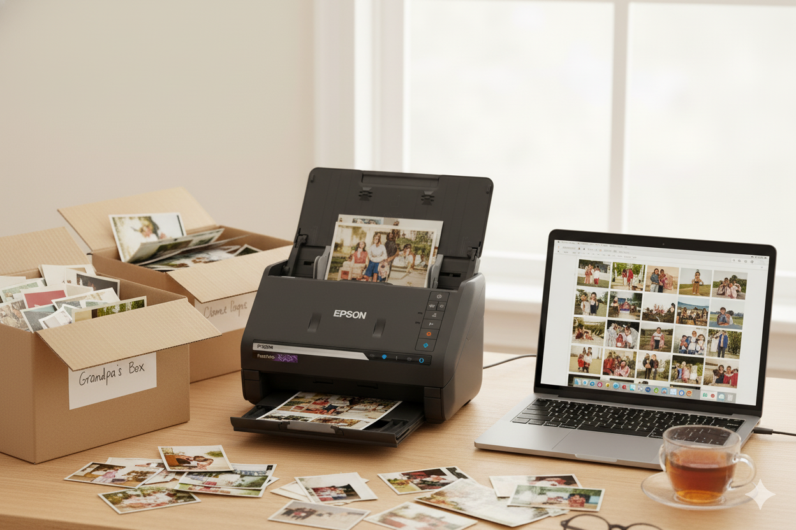
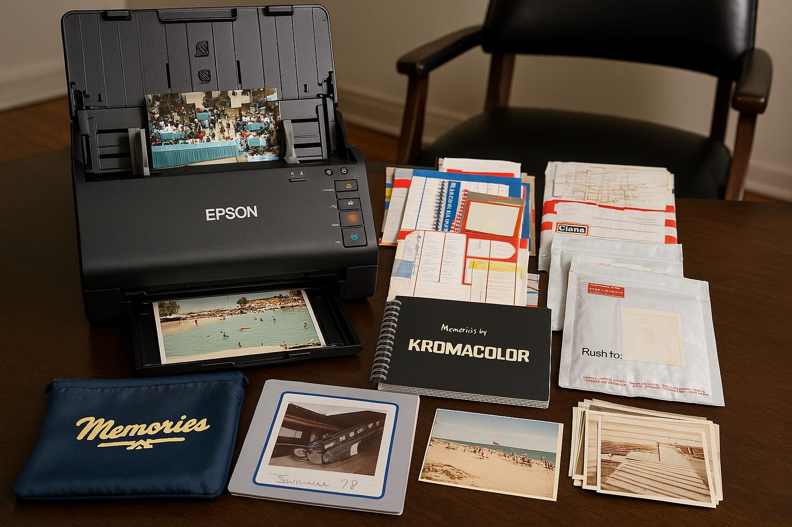
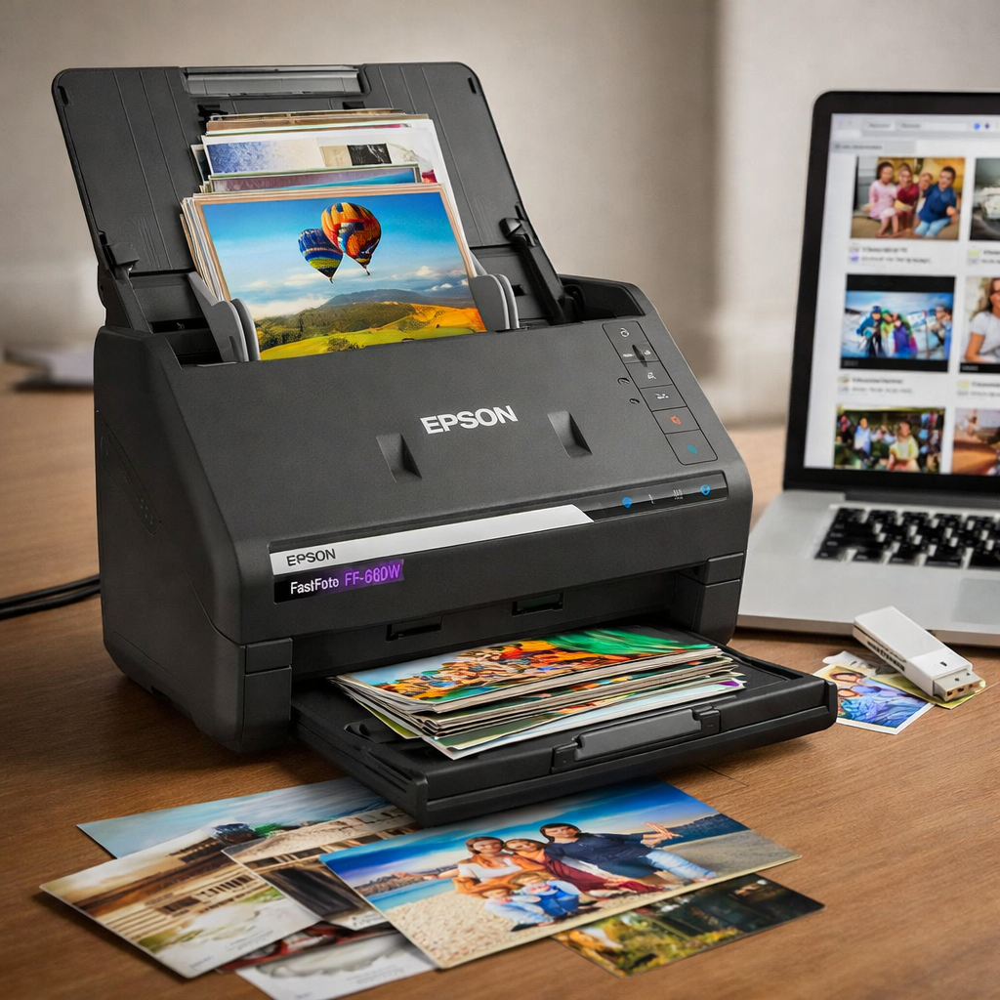
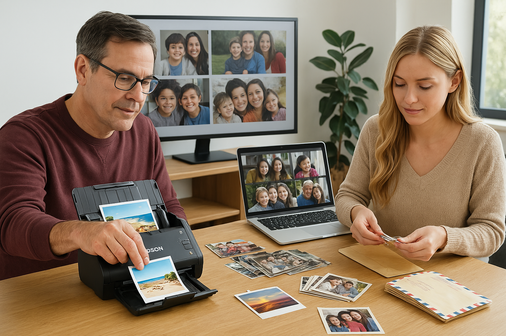

The Definitive Resource
Old photo prints don't last forever. Fading, yellowing, water damage — time is not on your side. The Epson FastFoto FF-680W lets you scan a thousand photos in a single afternoon, so your family's history is protected forever.

Photo prints degrade at a predictable rate. Color dyes fade. Paper yellows. Moisture warps. The average photo print begins to visibly deteriorate within 25–50 years — and millions of family photos are already past that point.

House fires, floods, and hurricanes destroy irreplaceable photo collections every day. Once physical prints are gone, they're gone forever. Digital backups stored in the cloud survive anything.
Color film prints begin fading within decades. The dyes used in 1970s–90s photography are especially fragile. Scanning before further degradation occurs is the only way to capture true colors.
Your grandchildren will grow up in a digital world. Digitizing your family's photo history means they can access, share, and cherish those memories across any device, anywhere, forever.
These aren't guesses. They're sourced from SEC filings, conservation research, and government preservation authorities. The clock is ticking on billions of physical photos.

After thoroughly testing this scanner ourselves — and scanning thousands of prints — we're confident this is the best personal photo scanner on the market for anyone with a large backlog of prints to digitize. It does one thing exceptionally well: it gets your photos off the shelf and into the digital world, fast.
Current Price
Check Amazon for latest pricing & deals
🛒 Buy on AmazonAs an Amazon Associate, we earn from qualifying purchases. This doesn't affect your price.
No product is perfect. Here's a straight look at where the FastFoto FF-680W excels and where you should set realistic expectations.
This scanner isn't for everyone — and that's okay. Here's who will get the most out of it.

If you have boxes of photos from the 70s, 80s, and 90s sitting in closets, this scanner was made for you. You'll scan your entire collection in a weekend instead of years.
Photo studios, real estate agents, genealogists, and archivists who regularly scan large volumes of prints will recoup the investment quickly in time savings alone.
Building a family history? Scanning handwritten notes, old letters, and photos from multiple generations becomes a joy rather than a chore with the FastFoto.
Not the right fit? If you only have a few dozen photos, a flatbed scanner or even your iPhone's document scanner may be all you need. We only recommend the FF-680W when the volume justifies the investment.
We've done the research so you don't have to. Deep guides on getting the most from your photo digitization project — refreshed weekly.
Don't Wait Another Year
Every month you wait is another month those prints sit in a box, slowly fading. The Epson FastFoto FF-680W makes it easy, fast, and even enjoyable to get the job done.
Check Current Price on Amazon →As an Amazon Associate we earn from qualifying purchases at no additional cost to you.